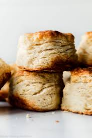

Biscuits

These biscuits are a "never fail" recipe, they're easy to make and everyone enjoys them.
Ingredients
- 2 cups all-purpose flour
- ½ teaspoon salt
- 4 teaspoons baking powder
- ½ teaspoon cream of tartar
- 2 teaspoons white sugar
- ½ cup butter, chilled and diced
- ¾ cup milk
Steps
- Preheat oven to 450 degrees F (230 degrees C).
- In a large bowl, sift together dry ingredients. Cut in butter until mixture resembles coarse oatmeal. Make a well in the center of the dry mixture and pour in the milk. Stir until dough begins to pull together then turn out onto a lightly floured surface.
- Press dough together and then roll out until 3/4 inch thick. Cut into 2 inch round biscuits and place on an ungreased baking sheet.
- Bake in preheated oven for 10 minutes, or until golden.
- Enjoy :)